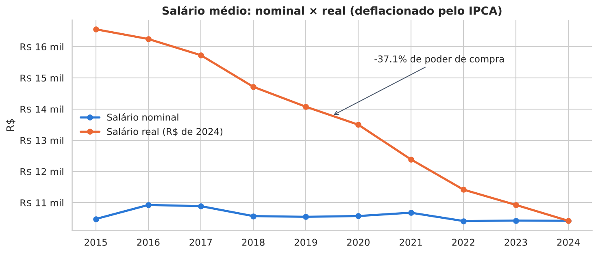
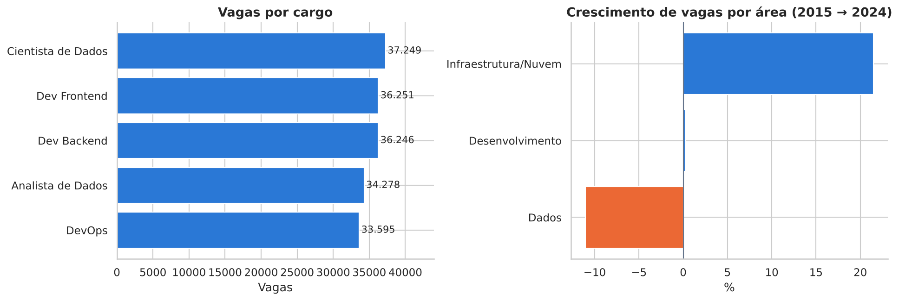
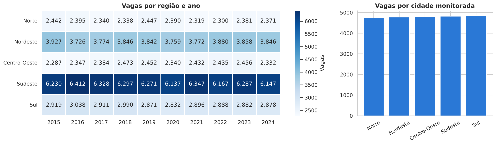
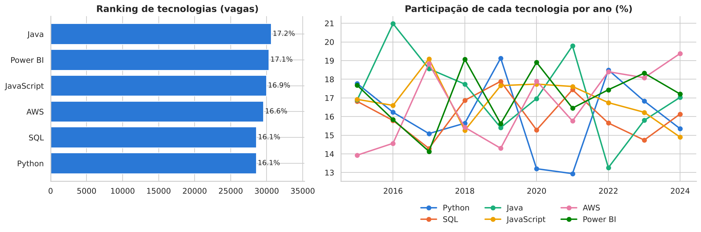

Sobre o projeto
A transformação digital ampliou a procura por profissionais de desenvolvimento de software, ciência de dados, computação em nuvem e infraestrutura. Este projeto investiga um conjunto de dados simulado do mercado de trabalho em TI no Brasil para identificar cargos mais demandados, tecnologias em alta, evolução salarial e distribuição regional das vagas.
O trabalho percorre um fluxo analítico completo: limpeza e preparação da base, engenharia de atributos, integração com a API do Banco Central (IPCA), persistência em banco SQLite, análise exploratória, KPIs, dashboard interativo e publicação na web.
Perguntas de negócio
- Quais cargos possuem maior demanda?
- Quais tecnologias aparecem com maior frequência?
- Houve crescimento salarial ao longo do tempo?
- Existem diferenças regionais relevantes?
- Quais áreas de TI possuem maior crescimento?
- Qual nível de experiência é mais exigido?
- Quais regiões concentram mais oportunidades?
Indicadores analisados
Total de vagas
Tamanho do mercado no recorte filtrado.
Cargo mais demandado
Ranking profissional por número de vagas.
Tecnologia mais requisitada
Tendência tecnológica do período.
Salário médio nacional
Média ponderada pela quantidade de vagas.
Região com mais vagas
Comparação regional absoluta e por cidade.
Modalidade predominante
Remoto, híbrido ou presencial.
Principais resultados




- Cientista de Dados é o cargo mais demandado (21,0% das vagas), com pequena vantagem sobre os demais.
- O trabalho remoto atingiu o pico em 2020 (40% das vagas) e segue como modalidade predominante.
- Júnior é o nível com mais vagas (34,1%) — há porta de entrada para iniciantes.
- A correlação entre salário e quantidade de vagas é desprezível (r ≈ 0,02).
Tecnologias utilizadas
Funcionalidades do dashboard
Filtros múltiplos
Ano, mês, região, UF, cargo, tecnologia, senioridade e modalidade.
KPIs dinâmicos
Recalculados a cada filtro.
Mapa interativo
Coroplético por estado com Plotly.
Análise temporal
Média móvel de 12 meses e variação anual.
Consumo de API
IPCA do Banco Central para salário real.
Banco relacional
SQLite + SQLAlchemy com tabela fato e dimensões.
Correlação
Pearson, Spearman e matriz de correlação.
Upload de CSV
Analise outra base com a mesma estrutura.
Arquivos do projeto
Acesse os principais componentes do projeto:
Estrutura do repositório:
Dashboard interativo
O dashboard principal foi desenvolvido com Streamlit e organizado em seis páginas: visão geral, cargos e tecnologias, análise regional, salários e correlação, tabela dinâmica com consultas SQL e conclusão executiva.
Objetivo pedagógico
Este projeto foi desenvolvido para a disciplina Linguagem de Programação — Análise e Visualização de Dados com Python, demonstrando como transformar uma base de dados em um produto analítico completo, organizado e publicado.
Mais importante do que gerar gráficos é compreender tendências, interpretar demandas profissionais e comunicar resultados de forma clara para apoiar a tomada de decisão.
Observação: os dados são simulados; os resultados ilustram o método analítico e não representam fielmente o mercado brasileiro.